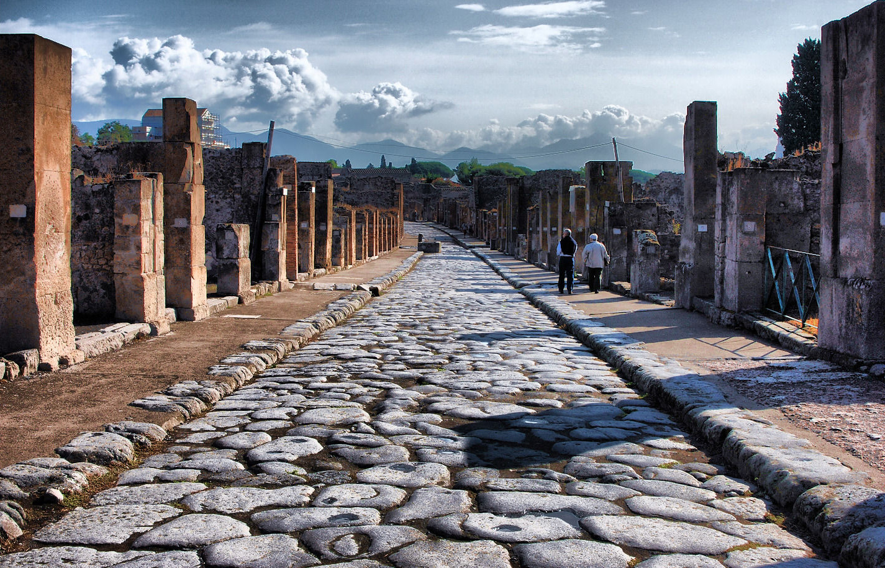

«Vedi Napoli e poi muori.»— Proverbio Partenopeo
Recap del Viaggio
Quattro giorni di meraviglie
Prima di partire, un ultimo giro libero tra i luoghi che ti hanno colpito di più. Una colazione al bar, un caffè napoletano rituale, un ultimo sguardo al Vesuvio all'orizzonte. Napoli non si abbandona — ti segue.

Giorno 1
Scavi di Pompei

Giorno 2
Reggia di Caserta

Giorno 3 · Mattina
Gran Cono del Vesuvio

Giorno 3 · Pomeriggio
Cristo Velato
Tappe da non dimenticare
- 🏛️ Campi Flegrei
- 🎎 Souvenir da San Gregorio Armeno
- 🍕 Pizza fritta + Antica Pizzeria da Michele
- 🥐 Sfogliatella riccia e zeppole
- 🗿 Via Brombeis
- 🍋 Un limoncello di commiato
- 🥂 Chiaia & Posillipo
- 🍟 Cuoppo di frittura di mare
- 🏰 Vomero e Castel Sant'Elmo